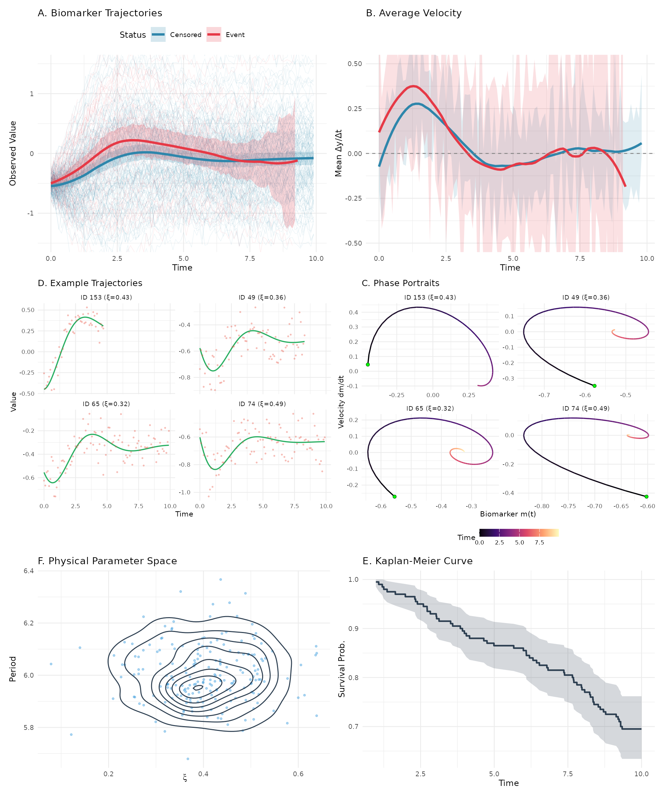

This vignette compares JointODE with traditional joint models to demonstrate the advantages of ODE-based modeling.
What We’re Comparing
We evaluate three approaches for joint modeling:
1. JointODE (Proposed Method)
Uses differential equations to model biomarker dynamics:
Longitudinal: \ddot{m}_i(t) = \beta_1 m_i(t) + \beta_2 \dot{m}_i(t) + \beta_{3} + \beta_4 x_{i1} + \beta_5 x_{i2}
Survival: \lambda_i(t) = \lambda_0(t)\exp(\alpha_1 m_i(t) + \alpha_2 \dot{m}_i(t) + \phi_1 w_{i1} + \phi_2 w_{i2})
Random effects: Subject-specific \beta_1 and \beta_2 (dynamics parameters)
2. JSM (Traditional Joint Model)
Uses splines to model trajectories:
Longitudinal: m_i(t) = \mathbf{B}(t)^{\top}\boldsymbol{\beta}_0 + \sum_{k=1}^2 x_{ik}\mathbf{B}(t)^{\top}\boldsymbol{\beta}_k + b_i + \varepsilon_i(t) where \mathbf{B}(t) are B-spline basis functions.
Survival: \lambda_i(t) = \lambda_0(t)\exp(\alpha m_i(t) + \phi_1 w_{i1} + \phi_2 w_{i2})
Random effects: Random intercept b_i only
Simulation Setup
We simulate data from 200 subjects under the following data-generating mechanism:
Longitudinal sub-model: Biomarker trajectories evolve according to a second-order ODE: \ddot{m}_i(t) = \beta_1^i m_i(t) + \beta_2^i \dot{m}_i(t) + \beta_0 + \beta_3 x_{i1} + \beta_4 x_{i2}
where subject-specific dynamics parameters (\beta_1^i, \beta_2^i) = (\bar{\beta}_1, \bar{\beta}_2) + \mathbf{b}_i with \mathbf{b}_i \sim \mathcal{N}(\mathbf{0}, \Sigma_b) introduce patient heterogeneity. Observed measurements are corrupted by Gaussian noise: V_{ij} = m_i(t_{ij}) + \varepsilon_{ij}, \quad \varepsilon_{ij} \sim \mathcal{N}(0, \sigma_e^2)
Survival sub-model: The hazard function depends on current biomarker value and velocity: \lambda_i(t) = \lambda_0(t) \exp\left(\alpha_1 m_i(t) + \alpha_2 \dot{m}_i(t) + \phi_1 w_{i1} + \phi_2 w_{i2}\right)
where \lambda_0(t) follows a Weibull distribution.
| Parameter | Value |
|---|---|
| Association (α₁, α₂) | (0.80, 2.00) |
| Survival covariates (φ₁, φ₂) | (0.60, -0.80) |
| ODE dynamics (β₁, β₂) | (-1.10, -0.84) |
| Random effects Var(β₁), Var(β₂) | (0.001, 0.044) |
| Measurement error (σₑ) | 0.10 |
| Sample size (n subjects) | 200 |
| Event rate | 30.5% |

Figure 1. Simulated data characteristics: (A) individual and average biomarker trajectories by survival status with 95% CI, (B) average velocity trajectories showing divergence between event and censored groups, (C) example patient trajectories showing true values (green) vs noisy observations (red), (D) phase portraits for 4 example patients (green dot = initial state), (E) distribution of patient-specific dynamics in physical parameter space (\xi, period), (F) Kaplan-Meier survival curve with 95% CI.
Results Summary
The simulation results demonstrate strong performance of JointODE:
- Low bias: Estimates for association parameters (\alpha_1, \alpha_2) and covariate effects (\phi_1, \phi_2) are centered near true values
- Accurate uncertainty: Coverage probabilities approach the nominal 95% level, indicating proper standard error estimation
- Efficiency gains: ESE decreases with sample size, showing efficient use of information
- Competitive performance: JointODE performs comparably to the Oracle model despite using only noisy observations
These results confirm that mechanistic ODE modeling can effectively recover true parameters while properly quantifying uncertainty, even with moderate sample sizes.
Appendix: Model Implementation Details
This section provides R code for fitting the comparison models using
the sim dataset.
Data Preparation
# Prepare data format for JSM package
jsm_data <- dataPreprocess(
long = sim$data$longitudinal_data %>% rename(ID = id),
surv = sim$data$survival_data %>% rename(ID = id, survtime = time),
id.col = "ID",
long.time.col = "time",
surv.time.col = "survtime",
surv.event.col = "status"
) %>%
rename(
obstime = time,
start = start.join,
stop = stop.join,
event = event.join
) %>%
select(
ID, obstime, observed, biomarker, velocity, acceleration,
x1, x2, w1, w2, start, stop, event
)
#--------------------------------------------
# Model 2: Traditional Joint Model (JSM)
#--------------------------------------------
# Step 1: Longitudinal sub-model with natural splines
fit_lme <- lme(
observed ~ x1 * bs(obstime, df = 5, Boundary.knots = c(0, 10)) +
x2 * bs(obstime, df = 5, Boundary.knots = c(0, 10)),
random = ~ 1 | ID,
data = jsm_data
)
# Step 2: Survival sub-model
fit_cox <- coxph(
Surv(start, stop, event) ~ w1 + w2 + cluster(ID),
data = jsm_data, x = TRUE
)
# Step 3: Joint model
fit_jsm <- jmodelTM(
fit_lme, fit_cox,
data = jsm_data,
timeVarY = "obstime"
)
#> Running jmodelTM(), may take some time to finish.
summary(fit_jsm)
#>
#> Call:
#> jmodelTM(fitLME = fit_lme, fitCOX = fit_cox, data = jsm_data,
#> timeVarY = "obstime")
#>
#> Data Descriptives:
#> Longitudinal Process Survival Process
#> Number of Observations: 17350 Number of Events: 61 (30.5%)
#> Number of Groups: 200
#> AIC BIC logLik
#> -26377.6 -26301.74 13211.8
#>
#> Coefficients:
#> Longitudinal Process: Linear mixed-effects model
#> Estimate StdErr
#> (Intercept) -0.5495484 0.0046777
#> x1 0.0374771 0.0048252
#> bs(obstime, df = 5, Boundary.knots = c(0, 10))1 0.1336705 0.0080203
#> bs(obstime, df = 5, Boundary.knots = c(0, 10))2 0.9827604 0.0056276
#> bs(obstime, df = 5, Boundary.knots = c(0, 10))3 0.2714365 0.0079623
#> bs(obstime, df = 5, Boundary.knots = c(0, 10))4 0.6593548 0.0067972
#> bs(obstime, df = 5, Boundary.knots = c(0, 10))5 0.5274467 0.0071195
#> x2 -0.0197927 0.0049656
#> x1:bs(obstime, df = 5, Boundary.knots = c(0, 10))1 0.4709302 0.0082757
#> x1:bs(obstime, df = 5, Boundary.knots = c(0, 10))2 0.7118344 0.0058165
#> x1:bs(obstime, df = 5, Boundary.knots = c(0, 10))3 0.2314254 0.0081830
#> x1:bs(obstime, df = 5, Boundary.knots = c(0, 10))4 0.5904711 0.0069970
#> x1:bs(obstime, df = 5, Boundary.knots = c(0, 10))5 0.4288224 0.0073917
#> bs(obstime, df = 5, Boundary.knots = c(0, 10))1:x2 -0.3916342 0.0085176
#> bs(obstime, df = 5, Boundary.knots = c(0, 10))2:x2 -0.6507863 0.0059480
#> bs(obstime, df = 5, Boundary.knots = c(0, 10))3:x2 -0.2527886 0.0083878
#> bs(obstime, df = 5, Boundary.knots = c(0, 10))4:x2 -0.5216500 0.0071064
#> bs(obstime, df = 5, Boundary.knots = c(0, 10))5:x2 -0.4031163 0.0075044
#> z.value p.value
#> (Intercept) -117.4835 < 2.2e-16 ***
#> x1 7.7669 8.044e-15 ***
#> bs(obstime, df = 5, Boundary.knots = c(0, 10))1 16.6666 < 2.2e-16 ***
#> bs(obstime, df = 5, Boundary.knots = c(0, 10))2 174.6322 < 2.2e-16 ***
#> bs(obstime, df = 5, Boundary.knots = c(0, 10))3 34.0900 < 2.2e-16 ***
#> bs(obstime, df = 5, Boundary.knots = c(0, 10))4 97.0034 < 2.2e-16 ***
#> bs(obstime, df = 5, Boundary.knots = c(0, 10))5 74.0845 < 2.2e-16 ***
#> x2 -3.9860 6.721e-05 ***
#> x1:bs(obstime, df = 5, Boundary.knots = c(0, 10))1 56.9054 < 2.2e-16 ***
#> x1:bs(obstime, df = 5, Boundary.knots = c(0, 10))2 122.3822 < 2.2e-16 ***
#> x1:bs(obstime, df = 5, Boundary.knots = c(0, 10))3 28.2811 < 2.2e-16 ***
#> x1:bs(obstime, df = 5, Boundary.knots = c(0, 10))4 84.3888 < 2.2e-16 ***
#> x1:bs(obstime, df = 5, Boundary.knots = c(0, 10))5 58.0138 < 2.2e-16 ***
#> bs(obstime, df = 5, Boundary.knots = c(0, 10))1:x2 -45.9792 < 2.2e-16 ***
#> bs(obstime, df = 5, Boundary.knots = c(0, 10))2:x2 -109.4118 < 2.2e-16 ***
#> bs(obstime, df = 5, Boundary.knots = c(0, 10))3:x2 -30.1378 < 2.2e-16 ***
#> bs(obstime, df = 5, Boundary.knots = c(0, 10))4:x2 -73.4058 < 2.2e-16 ***
#> bs(obstime, df = 5, Boundary.knots = c(0, 10))5:x2 -53.7173 < 2.2e-16 ***
#> ---
#> Signif. codes: 0 '***' 0.001 '**' 0.01 '*' 0.05 '.' 0.1 ' ' 1
#>
#> Survival Process: Proportional hazards model with unspecified baseline hazard function
#> Estimate StdErr z.value p.value
#> w1 0.67275 0.12449 5.4040 6.518e-08 ***
#> w2 -1.34183 0.28488 -4.7101 2.476e-06 ***
#> observed 0.72682 0.18397 3.9507 7.794e-05 ***
#> ---
#> Signif. codes: 0 '***' 0.001 '**' 0.01 '*' 0.05 '.' 0.1 ' ' 1
#>
#> Variance Components:
#> StdDev
#> Random 0.02695929
#> Residual 0.10961656
#>
#> Integration: (Adaptive Gauss-Hermite Quadrature)
#> quadrature points: 9
#>
#> StdErr Estimation:
#> method: profile Fisher score with Richardson extrapolation
#>
#> Optimization:
#> convergence: success
#> iterations: 4
#--------------------------------------------
# Model 3: Time-varying Cox (Oracle - Theoretical Benchmark)
#--------------------------------------------
fit_oracle <- coxph(
Surv(start, stop, event) ~ biomarker + velocity + w1 + w2 +
cluster(ID),
data = jsm_data
)
summary(fit_oracle)
#> Call:
#> coxph(formula = Surv(start, stop, event) ~ biomarker + velocity +
#> w1 + w2, data = jsm_data, cluster = ID)
#>
#> n= 17350, number of events= 61
#>
#> coef exp(coef) se(coef) robust se z Pr(>|z|)
#> biomarker 0.6831 1.9800 0.1878 0.1727 3.956 7.62e-05 ***
#> velocity 1.7701 5.8715 0.9761 0.8355 2.119 0.0341 *
#> w1 0.6722 1.9585 0.1239 0.1137 5.909 3.43e-09 ***
#> w2 -1.3300 0.2645 0.2855 0.2838 -4.687 2.78e-06 ***
#> ---
#> Signif. codes: 0 '***' 0.001 '**' 0.01 '*' 0.05 '.' 0.1 ' ' 1
#>
#> exp(coef) exp(-coef) lower .95 upper .95
#> biomarker 1.9800 0.5050 1.4115 2.7774
#> velocity 5.8715 0.1703 1.1417 30.1956
#> w1 1.9585 0.5106 1.5671 2.4476
#> w2 0.2645 3.7812 0.1516 0.4613
#>
#> Concordance= 0.75 (se = 0.033 )
#> Likelihood ratio test= 56.01 on 4 df, p=2e-11
#> Wald test = 51.1 on 4 df, p=2e-10
#> Score (logrank) test = 56.04 on 4 df, p=2e-11, Robust = 32.53 p=1e-06
#>
#> (Note: the likelihood ratio and score tests assume independence of
#> observations within a cluster, the Wald and robust score tests do not).